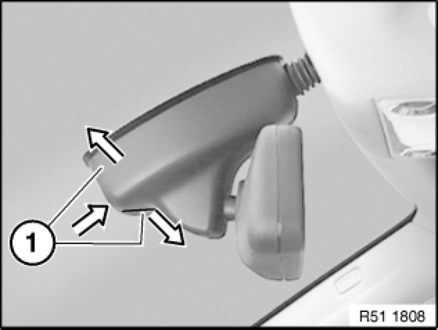
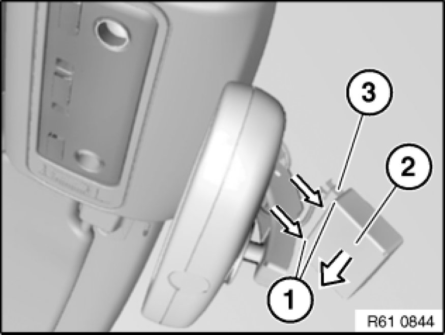

Rain Sensor: Service and Repair
61 35 177 - Removing and installing (replacing) rain/light sensor

Expand two-part mirror base cover (1) by pressing from below and detach.
Feed out two-part mirror base cover (1) and remove.

Disconnect plug connection (3).
Press locks (1) in direction of arrow and remove rain/light sensor (2) towards bottom.
Installation:
Do not damage optical element covered by rain/light sensor (2).
If necessary, initialize rain/light sensor Testing and Inspection.

Replacement:
Carry out programming/coding Programming and Relearning.